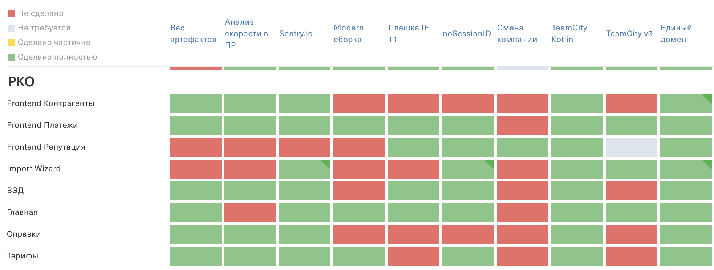

Platform team
the guide
Kazachenko Alexandr
Tinkoff.ru
Architect
shoom3301@gmail.com
Will talk about
- How to understand that you need a platform team
- What is included in the tasks of the platform team
- How to effectively do tasks in a platform team
- Delivery methods for services and components
- What tasks should be delegated to product teams and how to complete them
- Further evolution of the platform team
Platform team
???
🤔
How to understand that you need a platform team?
Reasons for creating Core-team
in Tinkoff.Business
- The number of teams increased from 3 to 20+
- It's hard to share expertise among 60+ developers
- Difficult to implement technical features in products
- Backlog of technical features is not fulfilled
Count the number of "yes" to the questions:
- Do you have many related commands?
- No time for research?
- Backlog of technical features is not fulfilled?
- No time to share code and practices with other teams?
- Big difference in tools with related commands?
- No time/desire to write documentation?
- No time to keep track of what other teams are doing?
- No time to refactor a legacy?
> 4
You need a platform team
🎲
What is included in the tasks
of the platform team?

Everything outside
of the product teams focus
🎨
💪 Responsibility
— for critical services and components without a maintainer
‍🎓 Knowledge sharing
— don't get a bottle neck
📢 Feedback
- The more you do, the more you need to maintain
- Solve issues through one channel
- Be caretaker
- Write a FAQ
⚡
How to effectively do tasks in a platform team?
Research
Architecture
Implementation
Documentation
Integrating in 1 product
Scaling
🔠Research
— the source of the platform team backlog
📠Architecture
— PoC and collect as many pitfalls as possible
⚒️ Implementation
— versioning, changelog, tests
— flexible, "boxed solution"
📠Documentation
— installation, API, use cases
🇠Integrating in 1 product
— make sure that the solution works in integration with the product
🌠Scaling
— "sell" and implement the solution in the maximum number of products
🚚
Delivery methods for services and components
Requirements
- End-to-end release (add a feature to all products in one release)
- Versioning / Availability of backward compatible API
- Frequent use in code
- UI implementation (ui-kit dependent)
📦 NPM package
- Versioning (may not have backward compatible API)
- Can't do end-to-end release (need to release all products)
- Often used in application code
- Implements UI
Example:
import {ApiService, DialogService} from '@sme-foundation/core';
@Injectable({providedIn: 'root'})
export class UserConfigService {
constructor(private api: ApiService, private dialog: DialogService) {}
setAndSaveConfig(config: IUserConfig): Observable {
this.setConfig(config);
return this.api.post('/users/config', config)
.pipe(tap(() => {
this.dialog.showPopup('Config saved!');
}));
}
}
🔗 Link to JS-script
- Has backward compatible API (not versioned)
- End-to-end release
- Rarely used in application code
- Does not implement UI
Example:
...
...
🖼️ IFrame
- Has backward compatible API (not versioned)
- End-to-end release
- Rarely used in application code
- Implements UI
- + JS-script, if interacting with the main application
Example:
<iframe src="/common/messenger.html"></iframe>
| NPM | JS link | IFrame | |
| Versioning | + | - | - |
| E2E release | - | + | + |
| Frequent use | + | - | - |
| UI | + | - | + |
😌
What tasks should be delegated
to product teams
and how to complete them?
❤️ Any tasks that you are ready to take and do
— do not refuse the help of grocery teams
🫠Create tickets
⏱️ Set deadlines
📝️ Write documentation

🕶️ Feature Implementation Matrix

⚽️ Gamification
🔮
Further evolution of the platform team
Сore team
— one of the first stages of evolution